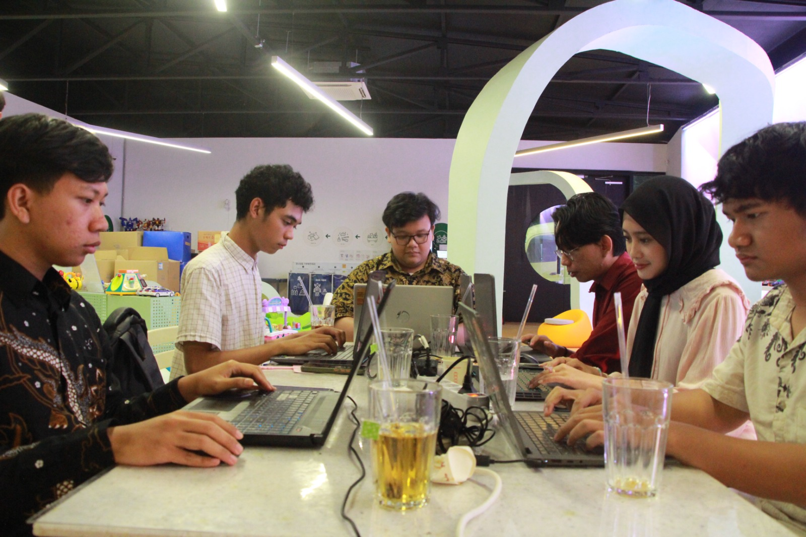
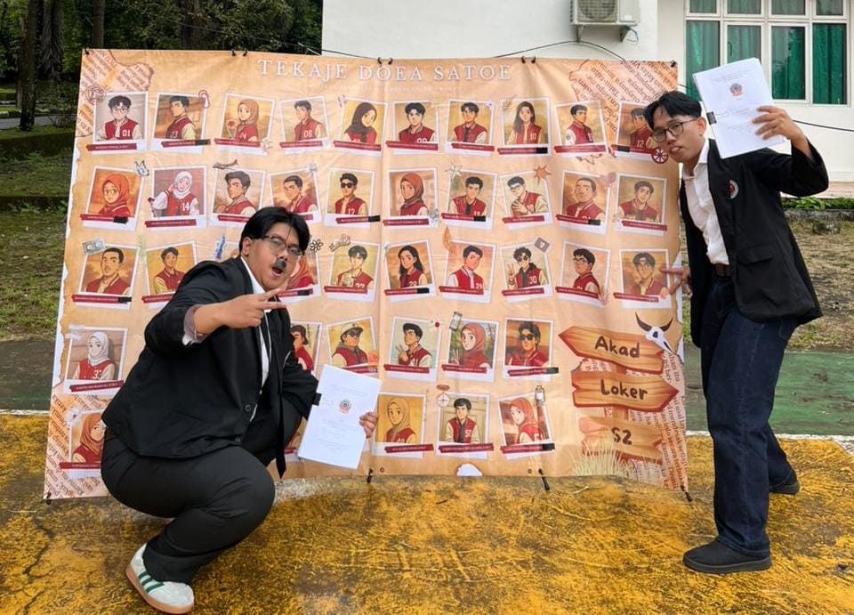
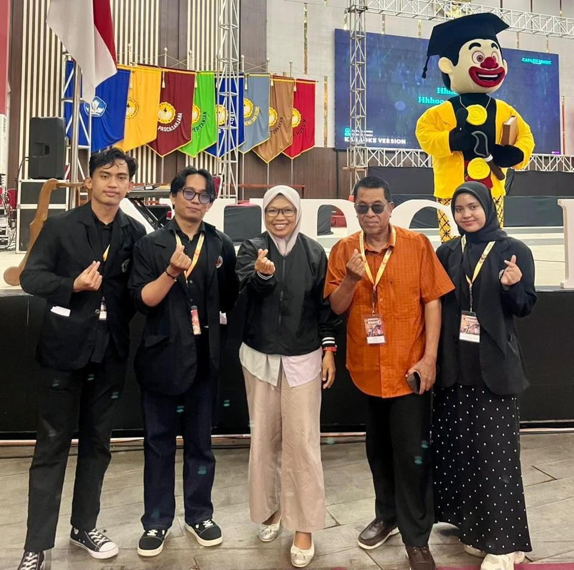
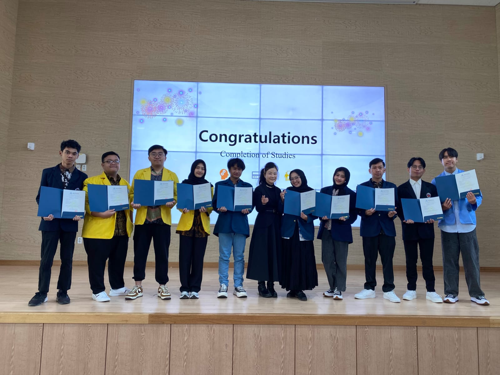
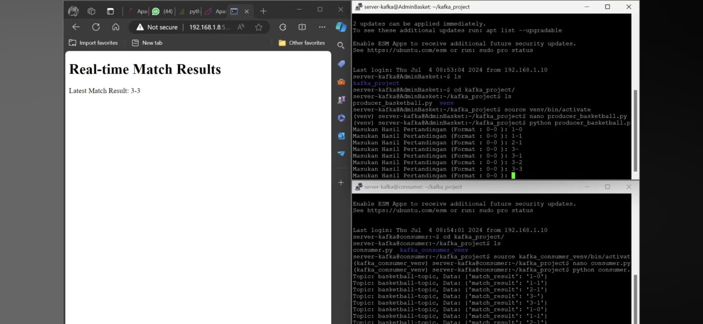
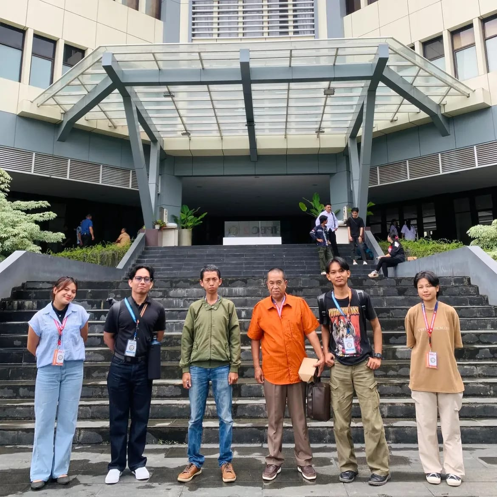

> system.identity.load();
Lulusan Applied Bachelor in Informatics yang berfokus pada riset dan pengembangan sistem berbasis Deep Learning, khususnya deteksi objek dan analisis visual pada domain lalu lintas kota. Berbasis di Makassar, Indonesia.
system.log("Website_Purpose"):
Website portofolio ini dibangun menggunakan HTML, CSS (Bootstrap 5), dan JavaScript murni sebagai repositori interaktif untuk mendemonstrasikan kapabilitas saya dalam pengembangan sistem cerdas dan antarmuka perangkat lunak.
system.log("Academic_Profile"):
Saya meraih gelar Sarjana Terapan Teknik Informatika (S.Tr.T) dari Politeknik Negeri Ujung Pandang dengan IPK 3.66. Saya memiliki ketertarikan mendalam pada Machine Learning, khususnya dalam mengolah data visual.
system.log("Global_Exposure"):
Melalui program IISMA (2024-2025), saya menempuh studi di Ulsan College, Korea Selatan. Di sana, saya berkolaborasi secara langsung dengan industri teknologi setempat untuk mengembangkan AI Toy Recognition System berbasis Computer Vision.
system.log("Hard_Skills"):
// AI, Machine Learning & Computer Vision
YOLO (v8-v12), RT-DETR, Faster R-CNN, Object Detection, Model Training & Fine-tuning, Data Annotation.
// Programming, Tools & Database
Python, Java, C++, PyTorch, OpenCV, Roboflow, VS Code, MySQL, Oracle Database.
system.log("Soft_Skills"):
Public Speaking, Kepemimpinan, Manajemen Proyek, Pemecahan Masalah, Adaptabilitas, Kolaborasi Tim.

2024 - 2025
Berkolaborasi dengan perusahaan teknologi Korea Selatan dalam pengembangan sistem deteksi objek berbasis AI untuk platform daur ulang. Menggunakan YOLOv10 dan YOLOv11.

2025 - 2026
Pengembangan sistem deteksi objek menggunakan data CCTV nyata dari Diskominfo Makassar. Membandingkan performa YOLO, RT-DETR, dan Faster R-CNN untuk pemantauan publik.

2025
Perwakilan PDDIKTI Wilayah IX berkompetisi pada tingkat nasional dalam National University Debating Championship (NUDC). Mengasah kemampuan berpikir kritis, argumentasi, dan komunikasi publik tingkat lanjut.

2024
Penerima beasiswa IISMA dan menempuh satu semester studi di Ulsan College, Korea Selatan. Menjabat sebagai Co-Student Representative (Co-SR) untuk mendukung koordinasi mahasiswa Indonesia.

2024
Membangun sistem yang mampu mengambil, memproses, dan menampilkan data skor pertandingan secara real-time melalui web. Memanfaatkan arsitektur terdistribusi yang melibatkan 6 Virtual Machines.

2025
Finalis cabang lomba Videografi pada Indonesian Polytechnic English Championship (IPEC) 2025 tingkat nasional yang diselenggarakan di Manado.